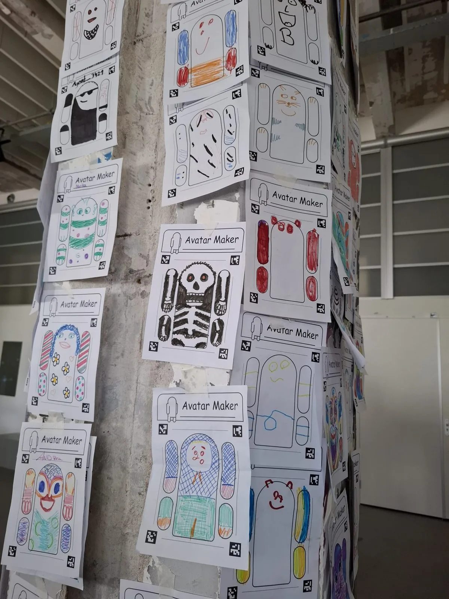

Makers Festival Twente
Vier dagen vol creativiteit, spel en muziek in Enschede.
Afgelopen week stonden we vier dagen op het Makers Festival Twente in Enschede. Vol creativiteit, spel en muziek.
Onze interactieve arcadekast draaide overuren: een speelse installatie waarbij je je eigen avatar-tekening kunt inladen en meteen in een game springt. En bij de Side Quest Rave kon je dansen op muziek die je zelf maakte. Pure chaos en plezier.
We kregen zóveel leuke reacties, van giechelende kids tot ouders die weer kind durfden te zijn. En dat vind ik misschien wel het allerleukst om te zien: allemaal verschillende mensen die samen durven te spelen. Lachen, klooien, gamen, avatars ontwerpen, samen muziek maken. Precies waarvoor we dit doen.
Met Studio Wotto gebruiken we onze creativiteit, en die van anderen, niet alleen om iets te maken, maar vooral om mensen samen te brengen en betekenisvolle ervaringen te creëren.
Op zoek naar een creatieve, interactieve installatie voor jouw school, museum of festival? Bekijk wat er te huur staat of neem gerust contact op.
